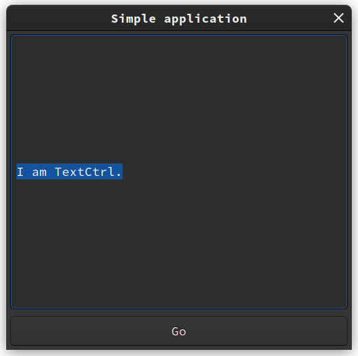

WXerlang simple example
wxWidgets is a graphical toolkit that ships with most erlang installs. It is object oriented, not functional and in wxErlang a module represents a class and the object created by this class has an own type, wxCLASS().
In this blog post create a basic WX application in Erlang and present the elements wxFrame, wxButton, and wxTextCtrl
The app we’ll build looks like this:

Figure 1: Screenshot from application.
Creating a new applications.
Let’s create a new application using rebar3, I like rebar and it seems to do things that I expect. Issue the command:
$ rebar3 new app name="wx_simple" ===> Writing wx_simple/src/wx_simple_app.erl ===> Writing wx_simple/src/wx_simple_sup.erl ===> Writing wx_simple/src/wx_simple.app.src ===> Writing wx_simple/rebar.config ===> Writing wx_simple/.gitignore ===> Writing wx_simple/LICENSE ===> Writing wx_simple/README
This creates the 'app' file and the a basic supervisor, there is nothing wx specific yet. The next step is to draw a window. Now that the "App" is created along with a simple supervisor, lets make the GUI.
Basics: Drawing a window.
I like my apps to fit "nicely" into the OTP style behavior, so lets make a new file called wx_server.erl in wx_simple/src directory.
This may look familiar to existing gen_server layout, its supposed to.
The code has been simplified to provide a minimal basic example that opens a window and nothing else.
-module(wx_server).
-include_lib("wx/include/wx.hrl").
-behaviour(wx_object).
-export([start/1, start_link/0, start_link/1,
init/1, terminate/2, code_change/3,
handle_info/2, handle_call/3, handle_event/2]).
-record(state, {sb,frame }).
start(Debug) ->
wx_object:start(?MODULE, Debug, []).
start_link() ->
start_link([]).
start_link(Debug) ->
Status = wx_object:start_link(?MODULE, Debug, []),
{ok, wx_object:get_pid(Status)}.
init(Options) ->
wx:new(Options),
process_flag(trap_exit, true),
Frame = wxFrame:new(wx:null(),
?wxID_ANY,
"Simple application",
[{size,{500,500}}]),
wxFrame:show(Frame),
{Frame, #state{}}.
%%%%%%%%%%%%
%% Callbacks
%% Handled as in normal gen_server callbacks
handle_info(Msg, State) ->
io:format("handle_info callback: ~p~n",[?MODULE, Msg]),
{noreply,State}.
handle_call(Msg, _From, State) ->
io:format("~p handle_call callback: ~p~n",[?MODULE, Msg]),
{reply,ok,State}.
%% Async Events are handled in handle_event as in handle_info
handle_event(Ev,State) ->
io:format("~p Got event ~p~n",[?MODULE, Ev]),
{noreply, State}.
code_change(_, _, State) ->
{stop, not_yet_implemented, State}.
terminate(_Reason, State) ->
wx:destroy().
%%%%%%%%%%%%%%%%% Internals %%%%%%%%%%
We need to update the supervisor (wx_simple_sup.erl) so that it can find this new worker (wx_server) to supervise it. Update "ChildSpecs" to include the reference to the wx_server and its start function. See the example below.
ChildSpecs = [
#{id => wx_server,
start => {wx_server, start_link, []},
shutdown => brutal_kill}],
And finally, start the application in the rebar3 shell repl.
$ rebar3 shell ===> Verifying dependencies... ===> Analyzing applications... ===> Compiling wx_simple Erlang/OTP 24 [erts-12.3.2.1] [source] [64-bit] [smp:8:8] [ds:8:8:10] [async-threads:1] [jit] Eshell V12.3.2.1 (abort with ^G) 1> ===> Booted wx_simple
And a 500x500 pixel window should appear on the screen. It can be closed by clicking on the close button (exactly how depends on which operating system you are running).
Adding a button (wxButton)
Our next step is to add a button, because everyone loves buttons.
The wxButton 'class/module' allows us to create buttons.
As explained in the Docs on wx button, to create button, we can write the following:
Button = wxButton:new(Frame, ?wxID_ANY, [{label, "Start"},
{size, {150, 50}}]),
The arguements to new are: new(Parent, Id, Options :: [Option]). The example above uses the macro ?wxID_ANY a convenience function, which returns a non colliding unique ID.
The parent in this case is the "Frame", which we'll talk more about later.
We tell the button that its parent window is the frame wxobject we created earlier in wx_server object above.
The "Options" list is a set of parameters, the ones we care about is the size.
This button has a label and size tuples in the Options list.
Adding editable text label ( wxTextCtrl )
We’ll add text to our frame using a wxTextCtrl. As per the docs:
TextCtrl = wxTextCtrl:new(Frame, ?wxID_ANY, [ {value, "I am error."}]).
Which follows the very similar pattern to the previous button. The last parameter (an empty list in the above) is any of the parameters, such as values or location, etc.
wxButton:connect(Button, command_button_clicked, [Options]
After creating the button, you likely want to connect click events up to a function. We're going to it via an inline callback in the "Options"
wxButton:connect(Button,
command_button_clicked,
[{callback,
fun(Evt, Obj) ->
wxButton:setLabel(Button, "clicked.."),
wxButton:disable(Button)
end}]),
In this particular callback function, we change the label and then 'disable' it, which means to effectively disable its use.
Improvement.
Not being happy with just laying out buttons, lets take it up a notch. We're going to use a "sizer", specifically the wxBoxSizer, which is a container ainer that organizes child widgets into a single row or column, depending on its configured orientation.
MainSizer = wxBoxSizer:new(?wxVERTICAL),
The erlang specific macro is: ?wxVERTICAL or ?wxHORIZONTAL.
After creating the sizer, you can add specific widgets to the sizer and also configure additional layout properties of the widgets themselves.
wxBoxSizer:add(MainSizer, TextCtrl, [{flag, ?wxALL}, {border, 5}]),
wxBoxSizer:add(MainSizer, Button, [{flag, ?wxALL}, {border, 5}]),
The wxBoxSizer class inherits from wxSizer class, which means that the functions from wxSizer apply to wxBoxSizer.
The function signature from wxSizer, looks a bit odd.
wxSizer:add(This, Window, [Option])
The second arguement is "Window", thats werid, checking out the function definition in the docs of add/3.
This = wxSizer()
Window = wxWindow:wxWindow() | wxSizer:wxSizer()
Option =
{proportion, integer()} |
{flag, integer()} |
{border, integer()} |
{userData, wx:wx_object()}
Ok, what is a wxWindow() ? The official docs illuminate the situation.
wxWindow is the base class for all windows and represents any visible object on screen.
All controls, top level windows and so on are windows. Sizers and device contexts are
not, however, as they don't appear on screen themselves.
So, its pretty much any visual widget, in our example we have the button and textctrl, widgets to add.
After that, now we can configure the main "Frame" to use this newly created Sizer.
wxWindow:setSizer(Frame, MainSizer),
Now we want wrap that up,
I should link it to a current working example, along with a current screenshot, and make rough promises of future tutorials.
I don't always "whoop", but when I do, there it is.
Resources:
- Idea blatently taken from Hello world in elixir.
- wx erlang man/docs
- TODO: provide a link to github for this.